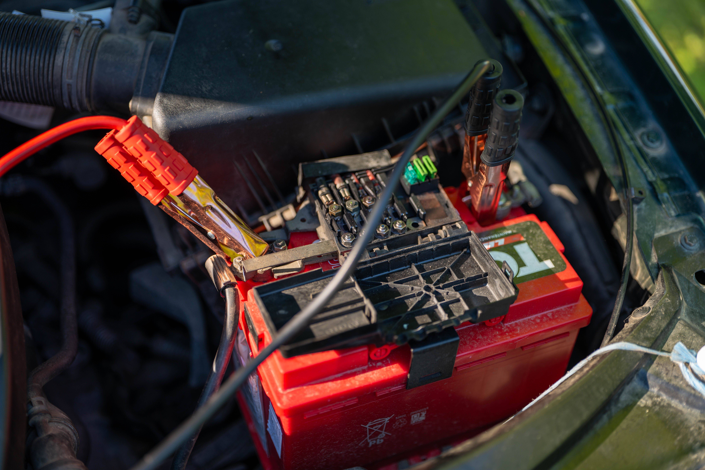

How to Clean Car Battery Terminals: Step-by-Step Guide
To clean corroded car battery terminals, first turn the vehicle off and disconnect the negative cable, followed by the positive cable. Remove the corrosion with a battery terminal brush and an appropriate cleaning solution, allow the terminals to dry, then reconnect the positive cable first and the negative cable last. Heavy corrosion or damaged terminals may require professional inspection.

Why Do Car Battery Terminals Corrode?
Battery terminal corrosion is common on vehicles that use traditional lead-acid batteries. Corrosion can form when battery gases, moisture, and metal around the terminals react with each other. The buildup may appear as white, blue, green, or powdery material around the battery posts and cable connections.
Heavy corrosion can interfere with the electrical connection between the battery and the vehicle. In some cases, this may contribute to slow cranking, intermittent electrical problems, or difficulty starting the engine.
Common Signs of Corroded Battery Terminals
- White or Blue Buildup: Powdery corrosion is visible around one or both battery terminals.
- Slow Engine Cranking: The starter may turn the engine more slowly than usual.
- Intermittent Electrical Problems: Lights, accessories, or electrical systems may behave inconsistently.
- Loose Cable Connection: Corrosion can build up between the battery post and terminal clamp.
- Starting Problems: A poor electrical connection can prevent sufficient current from reaching the starter.
What You Need to Clean Battery Terminals
Battery terminal cleaning usually requires only a few basic items. Work in a well-ventilated area and avoid open flames or sparks around the battery.
- Safety Gloves: Protect your hands while handling the battery and corrosion residue.
- Safety Glasses: Help protect your eyes from loose corrosion particles and accidental splashes.
- Battery Terminal Brush: A dedicated terminal brush makes it easier to remove buildup from the posts and clamps.
- Baking Soda and Water: A mild baking soda solution is commonly used to help neutralize acidic residue around lead-acid battery terminals.
- Clean Water: Useful for removing remaining residue after cleaning.
- Clean Cloth: Use it to dry the battery area and terminals after cleaning.
How to Clean Car Battery Terminals
1. Turn Off the Vehicle
Park the vehicle on a level surface, switch the engine off, remove the key, and turn off electrical accessories. Allow the engine and battery area to cool if necessary before starting.
2. Locate the Battery
Open the hood and identify the battery. Some vehicles place the battery in the trunk, under a seat, or in another protected location. Follow the vehicle owner's manual if the battery is not easily accessible.
3. Disconnect the Negative Cable First
Identify the negative battery terminal, usually marked with a minus sign (-). Loosen the negative terminal clamp and carefully remove it from the battery post.
Disconnecting the negative cable first helps reduce the risk of accidentally creating a short circuit if a metal tool touches the vehicle body while working on the positive terminal.
4. Disconnect the Positive Cable
After the negative cable has been removed and positioned safely away from the battery post, disconnect the positive cable. The positive terminal is normally marked with a plus sign (+) and may have a protective cover.
5. Apply a Cleaning Solution
Apply a small amount of baking soda mixed with water to the affected terminal and cable connection areas. The solution can help neutralize acidic residue and loosen corrosion.
Avoid allowing large amounts of liquid to enter the battery vents or other electrical components. Use only enough solution to treat the corrosion.
6. Scrub Away the Corrosion
Use a battery terminal brush to scrub the battery posts and inside surfaces of the cable clamps. Continue until loose corrosion and buildup have been removed and the metal contact surfaces are reasonably clean.
Do not use excessive force that could damage the battery post or terminal hardware. If a terminal is severely corroded, cracked, or damaged, cleaning alone may not solve the problem.
Rinse and Dry the Battery Terminals
After the corrosion has been removed, carefully wipe away the loosened residue. If needed, use a small amount of clean water to remove remaining cleaning solution, taking care not to flood the battery or nearby electrical components.
Dry the battery posts and cable clamps thoroughly with a clean cloth. The contact surfaces should be clean and dry before reconnecting the battery.
Reconnect the Battery
1. Reconnect the Positive Cable First
Place the positive cable clamp fully onto the positive battery post and tighten it securely. The clamp should not move freely when gently checked by hand.
2. Reconnect the Negative Cable
Install the negative cable clamp onto the negative battery post and tighten it securely. Make sure both terminals are firmly connected before closing the hood.
3. Check the Vehicle
Start the vehicle and check that the engine cranks normally and the electrical systems operate as expected. Some vehicles may require certain settings or features to be reset after the battery has been disconnected.
How to Prevent Battery Terminal Corrosion
- Keep the Terminals Clean: Inspect the battery connections periodically and remove buildup before it becomes heavy.
- Check Terminal Tightness: Loose connections can contribute to electrical problems and poor contact.
- Use Terminal Protection: Battery terminal protectant or suitable anti-corrosion products can help reduce future buildup.
- Inspect the Battery: Look for cracks, swelling, leaks, or other signs of battery damage.
- Keep the Battery Secure: Make sure the battery is properly held in place so it does not move excessively while driving.
When Cleaning May Not Be Enough
Cleaning the terminals can restore a poor electrical connection when corrosion is the main problem, but it will not repair a damaged battery or charging system. If corrosion returns quickly, the battery case appears damaged, or the vehicle continues to have starting problems after cleaning, the underlying cause may need further inspection.
Persistent corrosion can sometimes be associated with a battery that is leaking or venting excessively, a charging-system issue, or damaged battery cables. In those situations, simply cleaning the terminals may only provide a temporary improvement.
Frequently Asked Questions
It is generally safer to disconnect the battery before thoroughly cleaning the terminal connections. Disconnect the negative cable first and follow the vehicle manufacturer's instructions, especially on vehicles with sensitive electrical systems.
For a typical negative-ground vehicle, disconnect the negative (-) terminal first and reconnect it last. This reduces the chance of accidentally creating a short circuit with a metal tool.
A small amount of baking soda mixed with water is commonly used to neutralize acidic residue around traditional lead-acid battery terminals. Avoid getting excessive liquid into the battery or surrounding electrical components.
Repeated corrosion can be related to battery venting, leakage, moisture, loose connections, or charging-system problems. If corrosion returns quickly after cleaning, the battery and charging system may need further inspection.